[This section should make interesting reading for an end user of Eclipse 2.0
who has just switched to 2.1 (or is contemplating switching). It should inform
them the most interesting and most significant visible changes that came along
with 2.1. The section should be complete, in that no interesting, significant,
visible change should go unmentioned. It differs in tone from the Tips and
Tricks section in that it only covers things that are new for 2.1, and that it
only deals with things that users would feel like was a significant improvement.
Each item should stand by itself, so that the items can be easily rearranged and
subsetted. Screen snaps should be GIFs and must be no wider than 466 pixels.]
[This section is still preliminary. The material here is lifted from the M2
through M5 "New and Noteworthy" bulletins.]
Added Behavior tab to Java Editor Preference Page for smart insertion/skipping
of parenthesis and brackets, smart wrapping of strings
[Formatting changes: add horizontal line between each item; change font and
size throughout.]
|
|
Threads & Monitors view
|
The debugger's new Threads & Monitors view shows which threads are
holding locks and which are waiting to acquire locks.

|
|
|
Instance breakpoints & watchpoints
|
You can now set breakpoints &
watch points specific to a particular object instance. In the Variables
view, choose Instance Breakpoints... from the variables context menu.

|
|
|
Improved conditional breakpoints
|
A traditional conditional breakpoint
is triggered by a boolean expression evaluating to "true". It
is now possible to declare conditional breakpoints that are triggered whenever
the value of an expression changes. In addition, code assist is now available
when entering the condition.
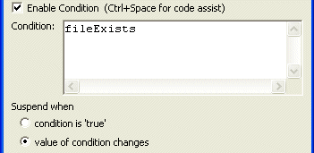
|
|
<<<<<<< jdt_whatsnew.html
|
Stepping into selections
|
The Java debugger now allows you to step into a single method within
a series of chained or nested method calls. Simply highlight the method
you wish to step into and select Step into Selection from the Java
editor context menu.

|
|
| New ways to create watch items
|
The Java debugger can now create watch items from the
Java editor by selecting an expression and using the Watch action
(available in the context menu, and in the Run menu). As well,
a watch item can be created by selecting a variable and using the Watch
action.
|
|
|
Step filters
|
Step filters are more convenient
to use now that a Step With Filters action has been added to the
debug toolbar and menu. As well, actions have been added to the debug context
menu to streamline the creation of step filters for the type or package
associated with the selected stack frame. |
|
|
Word wrap in Variables view
|
The details area of the debugger's
Variables and Expressions views now supports word wrap, available
from the view drop-down menu.
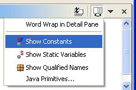
|
|
Stack trace
hyperlinks |
Java stack traces in the console now appear with hyperlinks. When you
place the mouse over a line in a stack trace, the pointer changes to the
hand and the stack trace is underlined. Pressing the mouse button opens
the associated Java source file and positions the cursor at the corresponding
line.

|
|
|
Console buffer size
|
The Console view now hangs on to only the most
recent N characters of output (default is 80K). The console buffer size
can be configured via the Debug > Console preference page. |
|
|
Filtering constants & statics
|
Two new actions are available in the pull-down menu of the Variables
view - Show Constants & Show Static Variables. These
actions toggle the visibility of static final and just plain static variables
respectively.
|
|
|
Faster stepping
|
The performance of the debugger's Run > Step over (F6) action
has been improved. You should notice the difference when holding down
the F6 key or rapidly clicking the Step Over button.
|
|
|
Instruction pointer
|
When debugging, the Java editor now indicates the currently executing
with an arrow in the left margin. This arrow is solid for the top stack
frame and hollow for non-top stack frames.
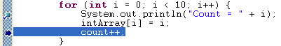
|
|
|
User configurable hover
help |
Hover help available in the Java
editor can be configured via the Java / Editor preference page.
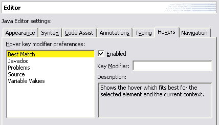 |
|
|
Prominent status
indication |
Both the Default Text editor and
the Java editor now display a prominent large spot in the upper right corner
to indicate that the file contains errors or warnings.
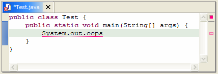 |
|
|
Find in file
|
The Search menu group contains a
new command to search for all occurrences of types, fields, methods and
local variables inside the compilation unit or class file declared the element.
Consistent with other search commands, markers are generated and presented
as annotations in the editor. Entries in the Search Results view have different
icons for read and write access. For example, the search results for "fName"
in "TestCase.java" look like:.
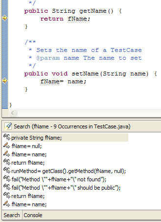 |
|
|
Quick
assist |
Position the cursor
in an identifier and press Ctrl+1 (Edit > Quick Fix) in the Java
editor to invoke the quick fix mechanism even when there are no
errors.
|
|
|
More Quick Fixes and Quick
Assists |
- Create missing constructors.
- Remove unused private methods/fields or
types.
- Fix ambiguous imports.
- Suggestion to organize imports.
- Create method in outer type (for methods
in anonymous classes).
- Remove if/while/for/do statement or block
and correctly indent the content.
- Quick assist offers surround-with
templates when called on a multi-line selection.
Note: For existing workspaces, you may
need to reset the templates back to their default values.
|
|
| More quick fixes |
There are now quick fixes for additional Java problems:
adding stubs for unimplemented methods; adding either a catch clause or
a throws declaration to deal with an uncaught exception; removing a catch
clause to deal with an exception no longer thrown. |
|
| Quick assist |
Hitting CTRL + 1 in the Java editor when the quick
fix icon (yellow light bulb) is showing brings up the menu of available
quick fixes. This provides an easy way to declare new local variables, parameters,
and fields without having to break stride. |
|
| |
| More Quick Fixes |
Click the light bulb in the left margin of the
Java editor to get help with fixing compiler-detected problems, including:
instance variable used in a static context; abstract method in a non-abstract
type; unimplemented abstract methods; missing catch clauses for uncaught
exceptions; non-visible method, field, type, or import. |
|
| Code completion improvements |
The Java compiler does a better job of rating the relevance of a proposal
based on the type expected in the context. For instance, for StringBuffer
sb= new [code assist], StringBuffer now shows up first on the list.
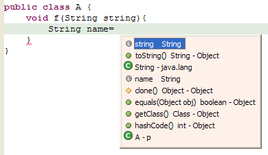
|
|
| Sticky hovers |
When you hover in the Java editor, you can hit the F2 key to make the
hover pane stay put so that you can scroll, resize, or select text from
it.
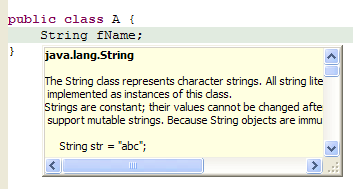
|
|
| Paste indentation |
The Java editor automatically determines the right amount of indentation
to use when pasting code. This behavior is controlled by a preference
setting on the Java / Editor / Typing panel.
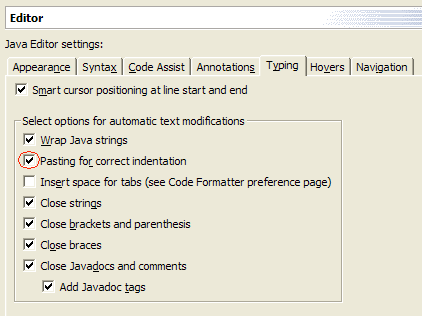
|
|
| Improved Java outline view |
You can adjust the Java outline to show just the
members of the compilation unit's main type by pressing the leftmost button
 (Go Into
Top Level Type) in the Outline view toolbar. (Go Into
Top Level Type) in the Outline view toolbar. |
|
| Customizable error indicators |
The Java editor now offers improved customizability for the visual appearance
of errors, warning, tasks, etc. These preference settings are found on
the Java / Editor / Annotations panel.
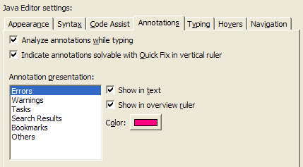
|
|
| Hyperlinked Java code |
While hovering over Java code, pressing the CTRL key and moving the mouse
turns class, method, and field identifiers into clickable links to the
corresponding declaration.
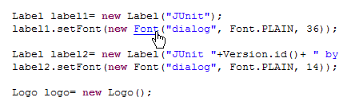
|
|
| Scroll to the next method |
Use CTRL + SHIFT+ Arrow Down(Navigate >
Go To > Next Member) and CTRL + SHIFT + Arrow Up (Navigate
> Go To > Previous Member) in the Java editor to quickly
navigate between member methods, fields, initializers, and types. |
|
| Smart typing in Java code |
There is a new preference page (Java / Editor / Typing) for controlling
automatic closing of parentheses, brackets, strings, and comments, for
smart wrapping of strings, and other helpful Java-specific editor behavior.
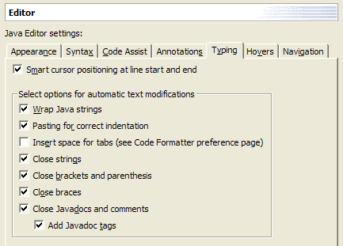
|
|
| More errors detected on the fly |
The Java editor now put the wavy red underline (known colloquially as
the "red sea") under all types of errors, now including uncaught
exceptions and unused variables, which require detailed flow analysis.
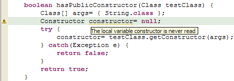
|
|
|
In-place outlines
|
Press Ctrl+F3 (Navigate
> Open Structure) in the Java editor to pop up an in-place outline
of the element at the current cursor position. Or press Ctrl+O (Edit
> Open Structure) to pop up an in-place outline of the current source
file.
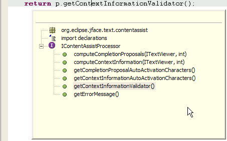 |
|
|
Hover information in editor
overview |
The Java editor's right
hand side overview ruler now shows hover information for problem annotations.
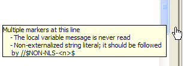 |
|
|
Go to last edit
position |
Press Ctrl+Q (Navigate
> Go to Last Edit Location) in any text-based editor to take you
back to the place where you last made a change. A button marked  appears in the toolbar
when the Editor Navigation action set is enabled. appears in the toolbar
when the Editor Navigation action set is enabled. |
|
|
Class file editor
|
The Class File Editor has
caught up with the Compilation Unit Editor. It now supports cursor-line
highlighting, line numbers, annotation highlighting, overview ruler, print
margin, semantic selection expansion, and keyboard navigation between the
members of the class file. |
|
|
Java keyword
completion |
Code assist is the Java editor
now provides completion on keywords. |
|
|
New lightweight refactoring
UI |
Activating any Java refactoring operation now
pops up a small starting dialog to gather information needed to perform
the refactoring. Click OK to execute the refactoring without further
ado, or click Preview to see its effects before deciding whether
to go ahead.
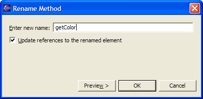 |
|
|
Refactoring can update
non-Java files |
When renaming a Java type or package
(or when moving a type to a different package), the fully qualified name
of the element can now be updated in non-Java files as well.
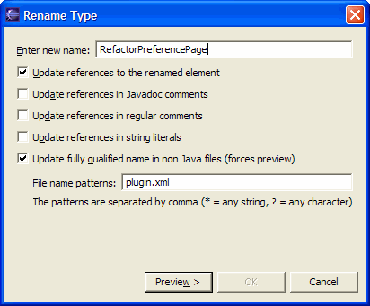 |
|
|
Move instance method
refactoring |
You can select an instance method
and select Move from the context menu. It allows you to move the
method to the declared class of one of the method's parameters, or to the
declared class of a field. This creates a new method and converts the old
method into a delegate (passing it 'this' if necessary).
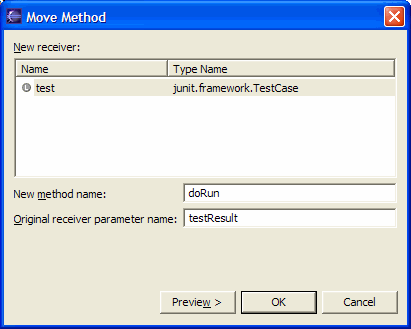 |
|
|
Improved Pull Up refactoring
|
Pull Up refactoring is more powerful now.
Additional functionality includes:
- Members can be pulled up more than 1 level
in the class hierarchy.
- Instead of pulling methods up you can
choose to declare them abstract in the destination class. This will add
method stubs to all non-abstract subclasses of the destination class if
required.
- By pressing Add Required you can
compute the set of all members that are required to be pulled up together
with those already selected.
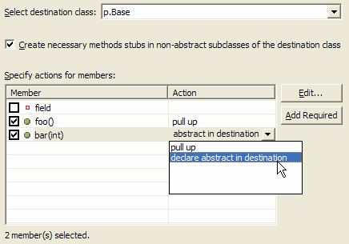 |
|
|
Push Down
refactoring |
Select a set of non-static methods and fields
declared in a class and choose Refactor > Push Down. For each
of the methods and fields you can then choose if you want to either:
- push it down to subclasses, or
- (in the case of methods) push it down to
subclasses and declare an abstract method in the class that currently
declares the method, or
- leave it as is

|
|
| Inline Method |
Inlines calls to a particular Java method, either
at a selected call site or everywhere a particular method is called |
|
| Inline Constant |
inlines uses of a particular Java static final
field, either at a selected reference site or everywhere a particular field
is referenced. |
|
| Convert Local Variable to Field |
allows you to turn a local variable into a field.
If the variable is initialized on creation, then the operation moves the
initialization to the new field's declaration or to the class's constructors. |
|
| Convert Anonymous Class to Nested
Class |
applies to the selected anonymous class declaration. |
|
| Convert Member Type to Top Level
Level Type |
Creates a new Java compilation unit for the selected
inner class, updating all references as needed. For non-static inner classes,
a field is added to allow access to the former enclosing instance. |
|
| Change Method Signature |
lets you can change the signature of a method
to add or remove parameters, or change parameter or return types. These
changes are applied to the declaration of the method, anywhere the method
is overridden or implemented, and anywhere it is called. |
|
| Extract Constant |
Creates a static final field from the selected
expression and substitutes a field reference, and optionally rewrites other
places where the same expression occurs. |
|
| Extract Interface |
Creates a new interface with a set of method and
makes the selected class implement the interface, optionally changing references
to the class to the new interface wherever possible. |
|
| Use Supertype Where Possible |
Replaces usages of a type with one of its supertypes |
|
|
Building Java project
cycles |
Java projects that depend on
each other can usually be compiled successfully in a single build action.
However, in order for cycles to be allowed, you must to lower the severity
associated with circular dependencies on the Java / Compiler
preference page.
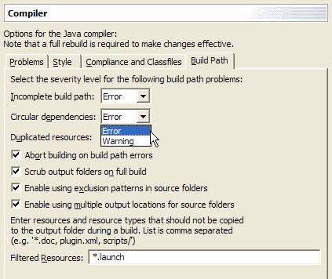 |
|
|
Compiler flags unused private
members |
The Java compiler can now warn of
private method, field, or type declarations which aren't used. The setting
is on the Java / Compiler preference page.
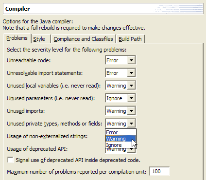 |
|
|
Package Explorer
improvements |
Non-Java projects are now
presented in the Package Explorer view. A filter is provided to filter out
non-Java projects, and the open/close interaction is now consistent with
the resource Navigator view.

Libraries (such as the JRE system library)
are now presented as a single node with one or more JARs as children.
|
|
| Java compiler catches assignments
that have no effect |
The Java compiler now gives you a warning when
you appear to be assigning a variable with its own value. This helps catch
a subtle mistake in setter methods and constructor declarations where the
name of a parameter is close to the name of a field: for example, void setFoo(int
newFoo) { this.foo = foo; } |
|
| Project-specific Java compiler settings |
In addition to workspace-wide Java compiler settings
(Java / Compiler), you can now configure these for a specific Java project
through the new Java Compiler property page on each Java project. |
|
| Hierarchical view of package structure |
There's a new Layout view menu option in the Java
Package Explorer which controls whether packages are displayed as a tree
(subpackages below packages) instead of a flat list (default). |
|
| Prefer to see static methods and
fields grouped together? |
There is a new preference page (Java / Compiler
/ Members Sort Order) for controlling the sort order of various different
kinds of members in Java views. |
|
|
More flexible Java source
and output paths |
The Java build path
setup offers improved flexibility:
- Exclusion filters let you exclude certain
source files within a source folder from being compiled.
- Source folders can now be nested, provided
you use an exclusion filter on the parent to exclude the files of the
other.
- The location of generated class files can
be set differently for each source folder.
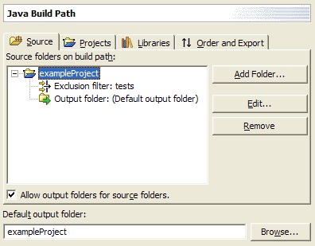 |
|
|
Logical packages
|
The Java Packages
view (Java Browsing perspective) coalesces packages of the same name
across source folders within a project. This presents a view of a logical
package. |
|
|
Hierarchical vs. flat layout
of packages |
An option on the Java
Packages (and Package Explorer) view allows you to change the way packages
are displayed. Hierarchical displays packages in a tree, with
subpackages below packages; Flat displays them as the traditional
way, as a flat list where all packages and subpackages as siblings.
|
|
|
Sort members
|
There is now a Sort
Members action on the context menu of Java compilation units and top
level types that rearranges the members of a compilation unit according to
the category order defined in the Java / Appearance / Member Sort
Order preference page. |
|
|
Automatic detection of
installed JREs |
The Java IDE now automatically detects
all installed JREs and JDKs on Mac OS X, which means you no longer have
to create them manually. In addition, Eclipse will use the locally installed
Javadoc that comes with the Mac OS X Developer Tools instead of getting
it via the Internet.
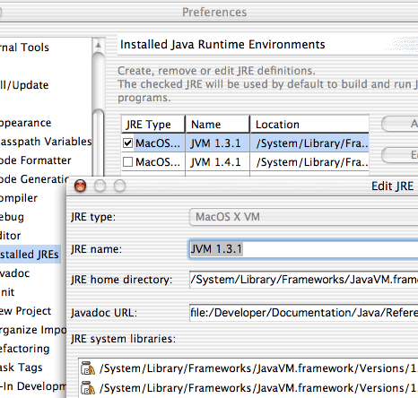 |
|
|
Type hierarchy view supports
grouping by defining type |
The type hierarchy method view lets
you sort the selected type's methods by their defining type. For example,
for AbstractList you can see that it contains method that were defined in
Object, Collection, and List:
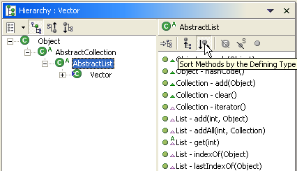 |
|
|
Special end character for
patterns in Open and Go To dialogs |
The various Open and
Go To dialogs now support the end character '<'. So if you want
to see all types in the Open Type dialog that end with "Test" you
have to enter the pattern "*Test<". If '<' is not present in the
pattern, a '*' is appended to the pattern. So entering "*Test" in the
Open Type dialog shows all types containing "Test" somewhere in the
type name. |
|
|
Multiple method
restore |
You can now restore multiple Java
elements from the local history in one operation by selecting Restore
From Local History from the context menu. In the left pane of the dialog,
check the elements you want to restore and for each checked element select
a history entry from the right hand side.

|
|
|
Non-shared project filter for
Package Explorer and Project views |
There is a new filter for excluding
non-shared projects from Package Explorer and Projects view:
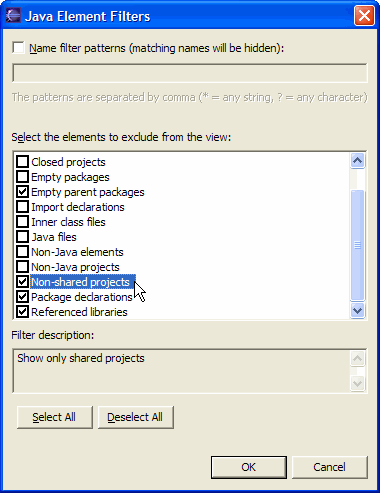 |
|
|
Improved prefix and suffix
configuration for variables |
In addition to configuring the prefix
or suffix for fields, you can now also specify the prefix or suffix for
static fields, parameters, and local variables. These settings on the Java
/ Code Generation preference page are used in code assist, quick fix,
and refactoring whenever a variable name needs to be computed.
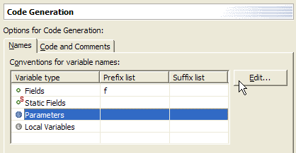 |
|
|
Customizable code
generation |
The Java / Code
Generation preference page now allows you to customize generated code
and comments in a similar way that normal templates are defined. These
code templates are used whenever code is generated. (The comments replace
the existing 'filecomment' and 'typecomment' templates used for code
generation.)
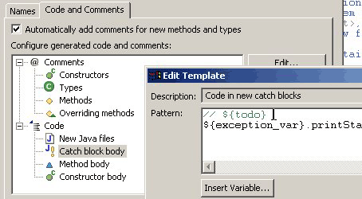 |
|
|
Add Delegate Methods
wizard |
Similar to the Create
Getter/Setter wizard, you can now easily generate delegate methods
(methods that delegate to a method provided by an instance
variable). The action is available on all types with fields.
|
|
|
Configurable task
tags |
The Java / Task Tags
preference page is used to configure the workspace-wide presentation
of task tags appearing in Java comments.
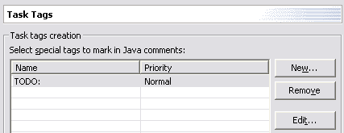 |